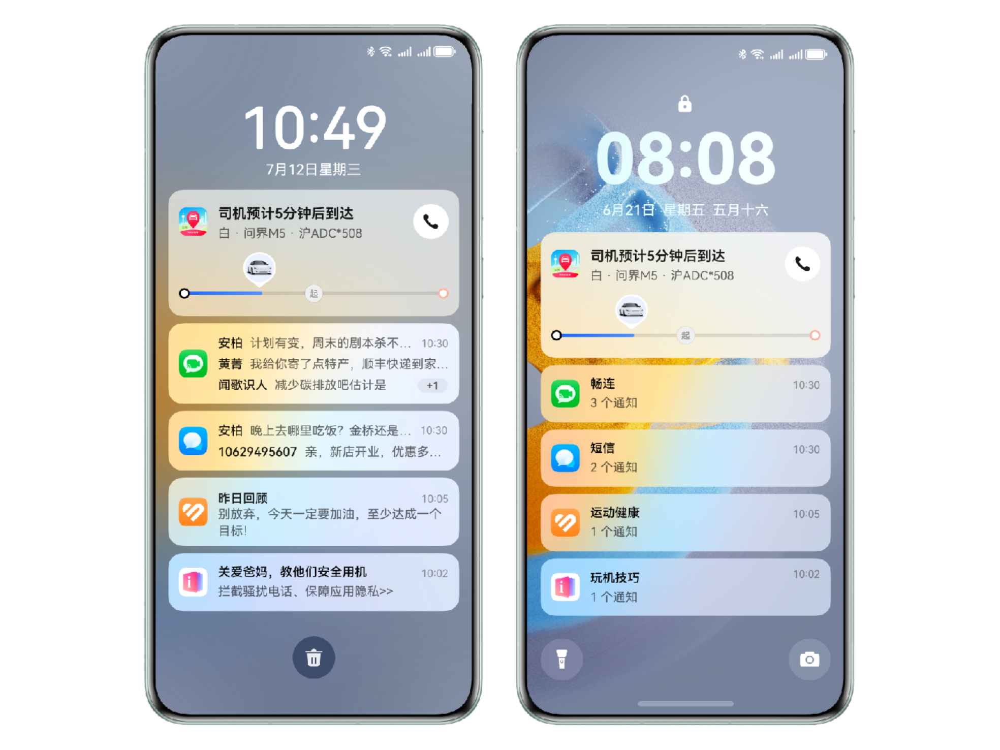
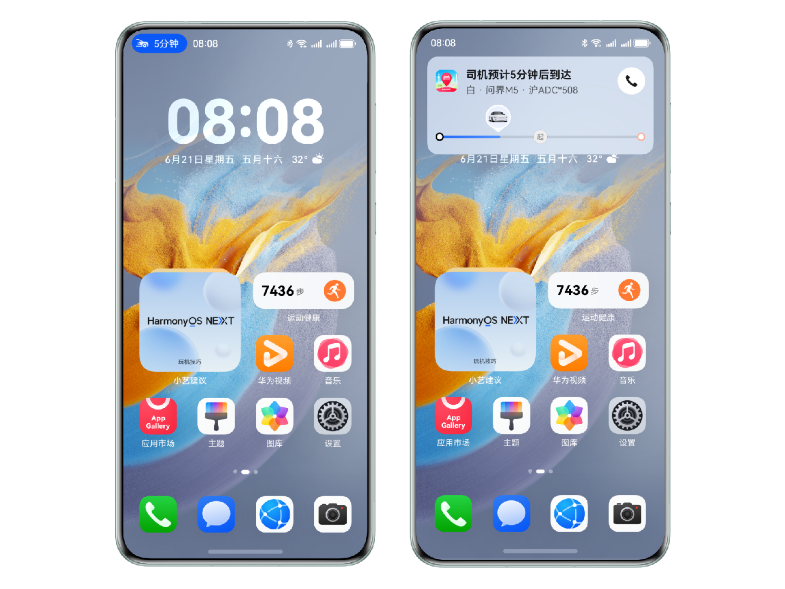
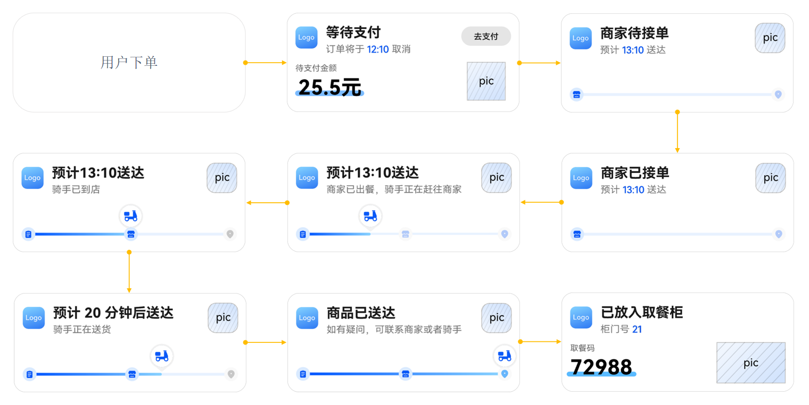
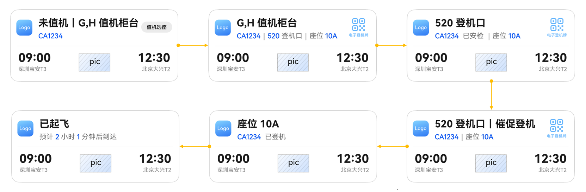
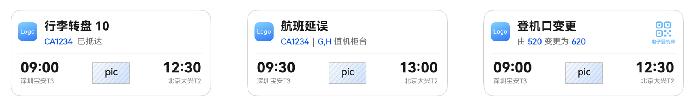

1 小窗口大世界，智享实况窗服务
1.1 实时掌控重要信息变化
移动互联网时代，各种以用户为中心的App如春笋般涌现，满足了用户在购物、导航、娱乐等不同场景下的需求，不同程度上丰富了用户的日常生活。然而，随着App种类的激增，用户在享受多样化服务的同时，也面临着多任务管理的挑战。
比如，用户正沉浸在游戏或追剧中时，能否想起并打开App查看一下：不久前点的外卖是否已上路？网约车是否已到达？餐厅预订的餐品是否已准备好? 在多应用进程并行使用的情况下，这些重要的服务很容易被忽略，从而影响到用户的日常生活质量与效率。

这时候,就可以使用实况窗服务。该服务支持应用将订单或服务的实时状态信息变化在设备的熄屏、锁屏、通知中心、状态栏等关键界面展示，并对展示信息的生命周期、用户界面UI效果等进行管理，在特定的情况下还可以震动或发出特定声音来提醒用户，帮助用户聚焦正在进行的任务，方便查看和即时处理通知内容。

1.2 丰富的场景支持
实况窗场景适用于出行打车、高铁、送餐等场景，具体可支持对接的场景如下表所示，更详细的场景说明请参考这里。
|
场景类型 |
适用范围 |
适用范围 |
|---|---|---|
|
出行打车 |
用户线上约车后，向用户展示司机接驾等待时间、行程中的剩余距离和时间等信息。 |
适用于网约车、出租车、拼车、顺风车等场景。 |
|
即时配送 |
指配送员将餐品、商品送达到用户指定地点的业务场景，通常在较短时间内完成配送环节。 |
适用于外卖、生鲜配送、同城配送等场景。 |
|
航班 |
用户主动关注某个航班时，向用户展示航班的关键变动，如航班开始登机、航班起飞、航班延误、航班取消、航班到达等关键场景。 |
适用于用户通过航班出行或者主动关注某个航班进展的场景。 |
|
高铁/火车 |
用户通过高铁、火车出行，向用户展示检票口、座位号、车次信息及列车运行状态等信息。 |
适用于高铁出行、火车出行的场景。 |
|
排队 |
需要通过排队叫号的方式，按顺序为用户提供服务的业务场景。 |
适用于办事大厅、医院、银行、餐饮等排队叫号能力场景。 |
|
取餐 |
指的是用户完成餐品/商品下单后，自行取餐或者取件的场景。 |
适用于餐饮线下取餐提醒，包括餐品排队情况、制作进度、取餐提醒等。 |
|
赛事比分 |
展示比赛双方成绩变化情况。 |
适用于游戏赛事、体育赛事等展示比分变化情况的场景。 |
|
共享租赁 |
用户使用临时租赁服务时，向用户展示实时租赁时长和费用等租赁状态信息的场景。 |
适用于共享单车、共享充电宝、停车场临时停车等场景。 |
|
计时 |
用户在某个短时间段持续的正计时或任务前的倒计时场景。 |
适用于专注时刻、番茄时钟、抢票倒计时提醒场景，仅限于工具类应用申请（计时场景仅支持通过端侧创建与更新）。 |
|
运动锻炼 |
运动过程中，向用户实时展示运动的时长和进度等信息。 |
适用于户外或室内的运动记录，如跑步、骑行等。 |
|
导航 |
用户使用导航服务时，展示将要发生的路线变化。 |
适用于步行导航、骑行导航、车辆导航。 |
1.3 热门场景案例
在设计特定应用场景的实况窗时，开发者需要考虑应用服务进程中需要设置提醒的关键节点与呈现的内容信息，这也是用户在使用实况窗过程中最关注的部分,在这里我们用三个热门场景来举例说明。
1.3.1 即时配送场景
即时配送的关键节点可分为用户下单、等待用户支付、等待商家接单、商家已接单、骑手取货中、骑手取货中、骑手配送中、商品已送达、放入取餐柜，用户可以通过实况窗实时得知外卖的配送进度，而无需频繁点开应用详情页查看。

详细场景节点设计可以参考即时配送。
1.3.2 航班场景
航班场景的关键节点分为未值机、已值机、开始登机、催促登机、已登机、已起飞、已抵达、延误、取消、登机口变更,实况窗在各个节点会显示不同的内容,同时提醒用户作出对应的响应。

延误取消登机口变更等特殊情况节点：

更加详细的航班场景节点设计可以参考航班场景。